คอร์ส ECU • เริ่มต้น
รู้จักอุปกรณ์บน ECU เอกสารประกอบการเรียน R • L • C และอุปกรณ์ที่ช่างต้องรู้
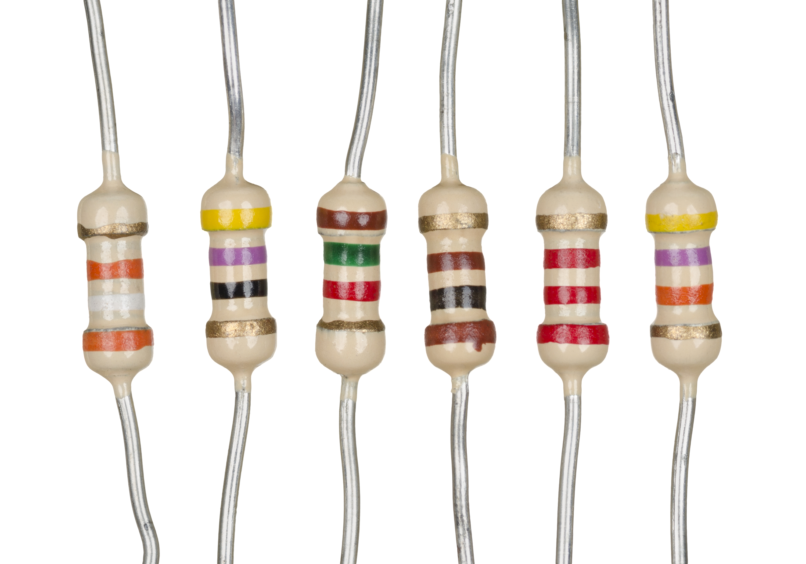
ภาพถ่ายจริง: ตัวต้านทานแบบแท่งWikimedia Commons / Public domain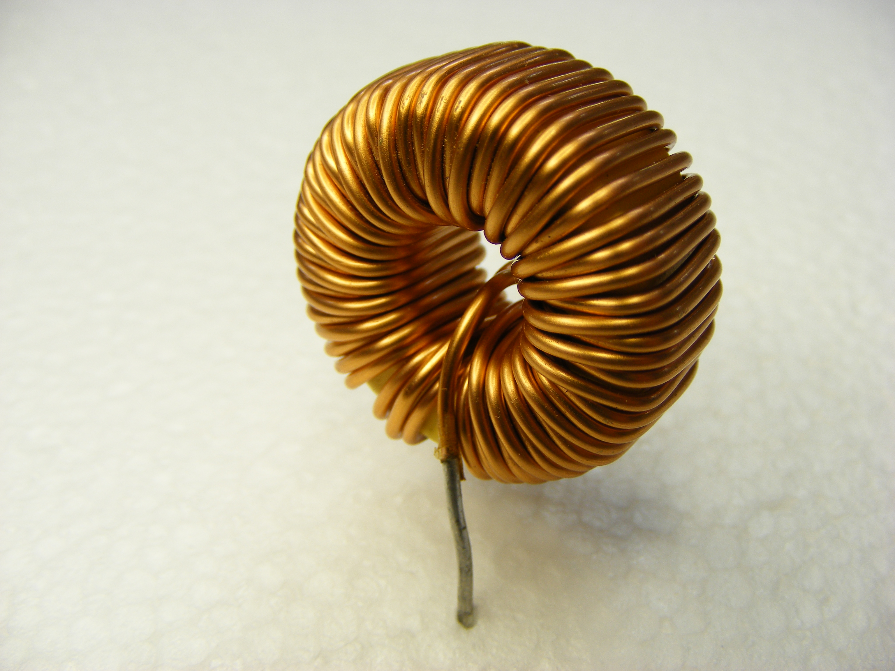
ภาพถ่ายจริง: ขดลวดแกนวงแหวนWikimedia Commons / CC BY-SA 4.0 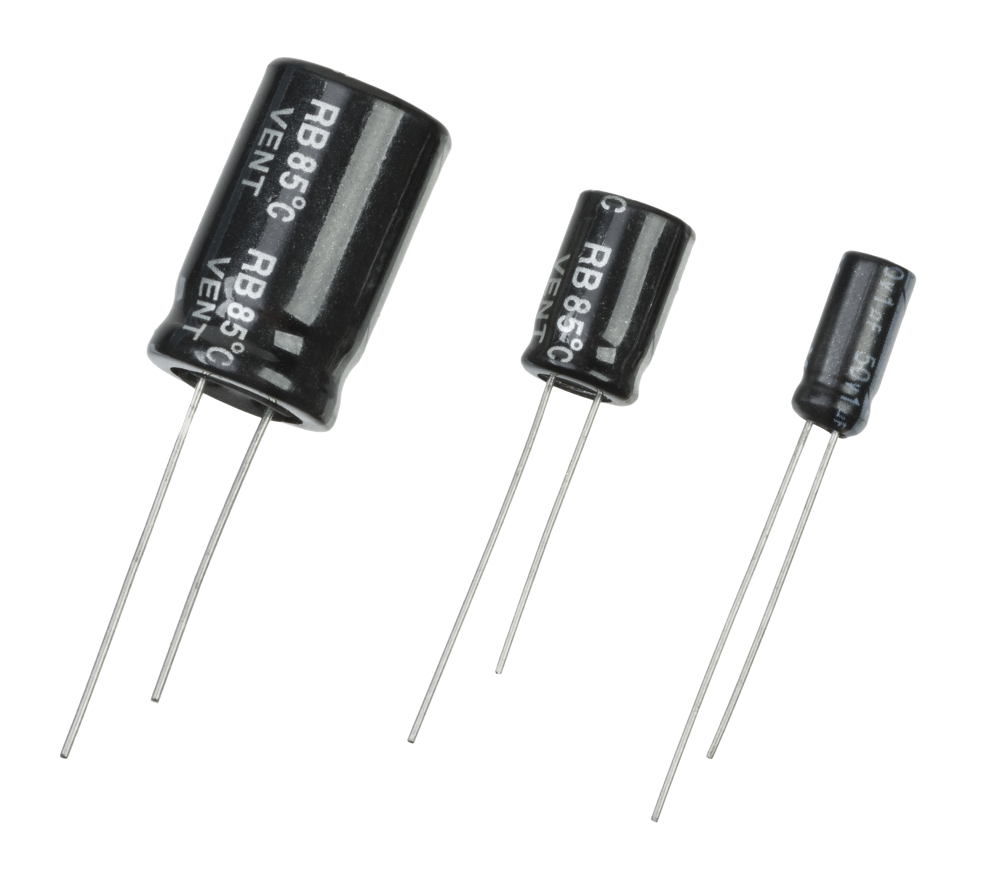
ภาพถ่ายจริง: คาปาซิเตอร์หลายรูปแบบWikimedia Commons / Public domainดูรูปจริง → อ่านสัญลักษณ์ → เลือกวิธีวัด → บันทึกหลักฐาน สำหรับผู้เริ่มเรียนและช่างที่ต้องการจัดพื้นฐานก่อนอ่านวงจร เอกสารนี้ใช้ภาพถ่ายจริงของอุปกรณ์ชิ้นเดี่ยวและภาพจากกล่องที่ผู้เรียนส่ง ควบคู่ภาพสัญลักษณ์ที่วาดขึ้นเพื่ออธิบาย
ภาพตัวอย่างไม่ใช่อะไหล่ทดแทนที่แนะนำ อุปกรณ์ชิ้นเดี่ยวบางรูปเป็นชิ้นสำหรับงานอิเล็กทรอนิกส์ทั่วไป ไม่ได้ยืนยันเกรดยานยนต์ เบอร์ที่ติดตั้งใน ECU หรือค่าที่ควรวัดของกล่องทั้ง 7 ใบ
มีแบบฝึกหัด ใบงานบันทึกผล และเฉลยแนวคิดท้ายเล่ม รูปภายนอกระบุผู้ถ่ายและสิทธิ์ใต้ภาพ ไม่มีภาพอุปกรณ์ที่สร้างด้วย AI
คอร์ส ECU • บทเรียน
อ่านตัวอักษรและหน่วยให้เป็น สัญลักษณ์บนบอร์ดที่อาจพบ ชื่อ / หน่วย จำไว้ R ตัวต้านทาน • Ω / kΩ / MΩ R123 เป็นรหัสตำแหน่ง ไม่ใช่ค่า 123 Ω L / FB ตัวเหนี่ยวนำ / ferrite • H หรืออิมพีแดนซ์ตามความถี่ FB ไม่ควรถูกแทนด้วยลวดเพราะวัด DC ต่ำ C คาปาซิเตอร์ • F / µF / nF / pF แรงดันทนไม่ใช่แรงดันที่ต้องพบ D / ZD ไดโอด / zener / protection ชื่อและการตั้ง reference ต่างกันตามผู้ผลิต Q / TR ทรานซิสเตอร์ / ภาคสวิตช์ แพ็กเกจเหมือนกัน แต่เบอร์และขาอาจต่าง U / IC วงจรรวม 8 ขาไม่ได้แปลว่าเป็น EEPROM ทุกตัว X / Y • F • CN / J นาฬิกา • ฟิวส์ • ขั้วต่อ ให้ตรวจผัง/BOM ประกอบชื่อที่เห็น
แปลงหน่วยที่ใช้บ่อย เท่ากัน ตัวอย่าง 1 kΩ = 1,000 Ω 4.7 kΩ = 4,700 Ω 1 MΩ = 1,000,000 Ω 0.1 MΩ = 100 kΩ 1 µF = 1,000 nF 0.1 µF = 100 nF 1 nF = 1,000 pF 10 nF = 10,000 pF 1 mH = 1,000 µH 0.1 mH = 100 µH 1 mΩ = 0.001 Ω 100 mΩ = 0.1 Ω
ตัวอักษร M กับ m ต่างกันมาก อ่านหน่วยก่อนเทียบผลวัดทุกครั้ง ชื่อ reference เป็นเพียงคำใบ้ ต้องพิสูจน์อุปกรณ์จริง
คอร์ส ECU • บทเรียน
R ตัวต้านทานแบบแท่ง ภาพถ่ายจริง: R แบบ axial มีแถบสี ใช้สอนการแยกค่ากับ toleranceWikimedia Commons / Public domainR หน่วย Ω • ขาหน้าที่ 2 ขา สัญลักษณ์เพื่อเรียนหน้าที่ ไม่ใช่ผังขาหรือวงจรของ ECU เฉพาะรุ่น
ทำหน้าที่อะไร จำกัดกระแส แบ่งแรงดัน และกำหนดไบอัส หน่วยโอห์ม ใช้ V = I × R ในเงื่อนไขของตัวต้านทาน
อ่านอะไรบนตัว รหัส 4 แถบ: ตัวเลข 2 แถบ → ตัวคูณ → tolerance ตัวอย่างที่กำหนดเพื่อสอน น้ำตาล–ดำ–แดง–ทอง = 1 kΩ ±5% ไม่ได้อ้างว่าทุกตัวในภาพมีค่านี้
เริ่มวัดอย่างไร ถอดแหล่งจ่ายและจัดการประจุตกค้างตามวิธีที่ถูกต้อง แล้ววัด Ω บันทึกว่าวัดคาบอร์ดหรือแยกขา หากมีทางขนานค่าที่อ่านอาจไม่ใช่ค่า R ตัวเดียว
อย่าสรุปเกินผลวัด แถบสีไม่บอกกำลังวัตต์และความทนพัลส์ครบ ภาพถ่ายแสงเพี้ยนอาจอ่านสีผิด และค่า Ω ที่ดูปกติยังไม่พิสูจน์สภาพเมื่อร้อน/รับโหลด
ลองตอบ: ถ้า R 1 kΩ ±5% แบบอุดมคติ ช่วงค่าตาม tolerance คือเท่าไร?
หลักการ: Vishay Color Code • Fluke Resistance
คอร์ส ECU • บทเรียน
R แบบ SMD และการอ่านรหัส 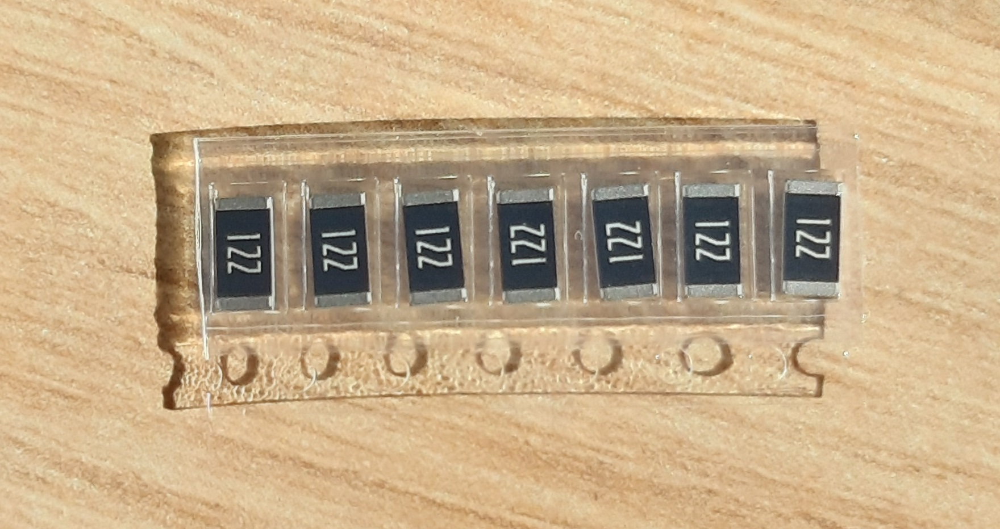
ภาพถ่ายจริง: R SMD ตัวอย่างที่เห็นรหัส 122; ไม่ใช่ค่าของ R บนกล่องอื่นWikimedia Commons / CC0 R หน่วย Ω • ขาหน้าที่ 2 ขา สัญลักษณ์เพื่อเรียนหน้าที่ ไม่ใช่ผังขาหรือวงจรของ ECU เฉพาะรุ่น
ทำหน้าที่อะไร หน้าที่เหมือน R แบบแท่ง แต่ติดผิวแผงและมีขนาดเล็ก บางรุ่นไม่มีรหัสค่า
อ่านอะไรบนตัว ระบบตัวเลข 3 หลัก: 103 = 10 × 10³ Ω = 10 kΩ, 472 = 4.7 kΩ, 122 = 1.2 kΩ ระบบที่ใช้ R แทนจุดทศนิยม: 4R7 = 4.7 Ω อย่าใช้กฎนี้กับอุปกรณ์ทุกชนิด
เริ่มวัดอย่างไร อ่านรหัสบนตัวแยกจาก Rxxx บนแผง แล้ววัด Ω เมื่อไม่มีไฟ หากค่าไม่ตรง ให้ตรวจทางขนานและระบบรหัสของผู้ผลิตก่อน
อย่าสรุปเกินผลวัด รหัส EIA-96 ใช้ตารางต่างออกไป 0/000 อาจเป็น jumper ตามรุ่น ไม่ใช่ฟิวส์แทนกันได้ และขนาด SMD ไม่รับรองกำลังวัตต์โดยลำพัง
ลองตอบ: 103 กับ R103 ที่พิมพ์บนแผงให้ข้อมูลเหมือนกันหรือไม่?
หลักการ: State of the Art Part Marking • Vishay
คอร์ส ECU • บทเรียน
Shunt ตัวต้านทานวัดกระแส ภาพจริงบนบอร์ด: กลุ่มที่เห็น marking R270 ต้องยืนยันชนิด/การต่อก่อนเรียกว่า shunt
SHUNT sense + / sense − สัญลักษณ์เพื่อเรียนหน้าที่ ไม่ใช่ผังขาหรือวงจรของ ECU เฉพาะรุ่น
ทำหน้าที่อะไร เปลี่ยนกระแสเป็นแรงดันตกเล็กน้อยให้วงจรตรวจจับ ตัวอย่างคำนวณ I = 2 A และ R = 0.1 Ω จะได้ V = 0.2 V เป็นโจทย์ ไม่ใช่ค่ากล่องในภาพ
อ่านอะไรบนตัว ถ้าระบบ marking ของผู้ผลิตใช้ R เป็นจุดทศนิยม R270 บนตัวอาจหมายถึง 0.270 Ω แต่ R270 บน silk อาจเป็นเลขตำแหน่ง ต้องแยกให้ถูก
เริ่มวัดอย่างไร DMM สองสายอาจรวมความต้านทานสายและหน้าสัมผัส ค่าต่ำมากควรใช้วิธีชดเชยหรือการวัด 4 สายตามความเหมาะสม การวัดแรงดันขณะมีไฟต้องมีวงจรและ reference ที่ยืนยัน
อย่าสรุปเกินผลวัด บี๊บไม่ได้แปลว่าช็อต ตัวต้านทานค่าต่ำที่ขาด/ค่าเปลี่ยนอาจทำให้การอ่านกระแสผิด แต่ห้ามสรุปจากรูปร่างหรือรหัสอย่างเดียว
ลองตอบ: เหตุใดการเอาค่าความต้านทานสายวัดไปรวมจึงผิดมากในงาน mΩ?
หลักการ: Vishay notation • กฎของโอห์ม / ตัวอย่างคำนวณ
คอร์ส ECU • บทเรียน
L ตัวเหนี่ยวนำและ ferrite bead ภาพถ่ายจริง: ตัวเหนี่ยวนำแกนวงแหวน เห็นลวดจริง; ค่า µH ไม่อนุมานจากรูปWikimedia Commons / CC BY-SA 4.0 L • H / mH / µH สัญลักษณ์เพื่อเรียนหน้าที่ ไม่ใช่ผังขาหรือวงจรของ ECU เฉพาะรุ่น
ทำหน้าที่อะไร L เก็บพลังงานในสนามแม่เหล็ก ใช้แปลงไฟและกรอง หน่วย H / mH / µH ส่วน ferrite bead ใช้ลดรบกวนตามย่านความถี่ ต้องดูอิมพีแดนซ์ กระแส และ DCR
อ่านอะไรบนตัว บางตัวระบุค่า/เบอร์ บางตัวไม่ระบุ รูปร่างปิดแกนหรือสีของแกนไม่ได้ยืนยันค่า ชิ้นส่วนสองขาคล้าย R อาจเป็น ferrite
เริ่มวัดอย่างไร ตรวจขาดด้วย Ω ได้ตามขั้นตอนที่ไม่มีไฟ แต่การวัด L ต้องใช้ LCR และเงื่อนไขความถี่/กระแสที่ตรงงาน ตรวจ datasheet เรื่อง saturation และ current rating เมื่อต้องเลือกทดแทน
อย่าสรุปเกินผลวัด DC ต่ำไม่พิสูจน์ว่าขดลวดไม่ช็อตรอบ และไม่ยืนยันการกรองความถี่สูง ห้ามบายพาส L/FB ด้วยลวดเพราะเห็นมิเตอร์บี๊บ
ลองตอบ: L กับ ferrite มีข้อกำหนดใดที่โหมด Ω ของ DMM ไม่บอก?
หลักการ: TI Ferrite Beads in Gate Drive Circuits
คอร์ส ECU • บทเรียน
C เซรามิกและ MLCC 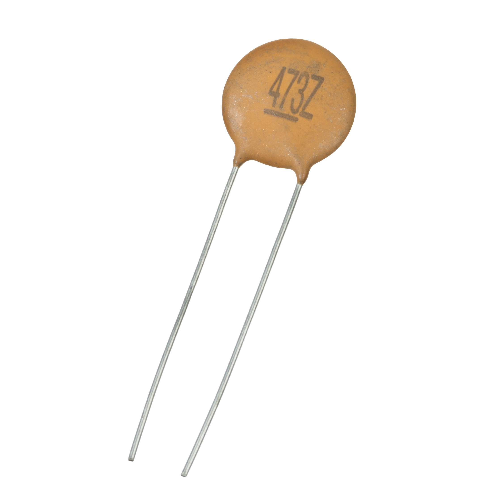
ภาพถ่ายจริง: C เซรามิกแบบจาน; MLCC บน ECU อาจเป็นสี่เหลี่ยมเล็กและไม่มีรหัสWikimedia Commons / Public domainC • F สัญลักษณ์เพื่อเรียนหน้าที่ ไม่ใช่ผังขาหรือวงจรของ ECU เฉพาะรุ่น
ทำหน้าที่อะไร เก็บประจุ บายพาสรบกวน และทำงานเป็นตัวกรองร่วมกับ R/L C เซรามิกหลายแบบไม่มีขั้ว แต่ต้องยืนยันชนิดก่อน
อ่านอะไรบนตัว ตัวอย่างระบบรหัส C แบบ pF: 104 = 100,000 pF = 100 nF = 0.1 µF ไม่ใช้สูตรนี้กับ marking ทุกแบบ MLCC ที่ไม่พิมพ์ค่าต้องหา BOM/เอกสารหรือวัดอย่างเหมาะสม
เริ่มวัดอย่างไร ตรวจประจุตกค้างก่อนโหมด C/Ω แล้วแยกวงจรตามคู่มือเครื่องวัด บันทึกความถี่และระดับสัญญาณของ LCR หากใช้เปรียบเทียบผล
อย่าสรุปเกินผลวัด สี/ขนาดไม่บอกค่าความจุ ค่าของเซรามิกไดอิเล็กทริกสูงบางชนิดลดลงเมื่อมี DC bias ค่าวัดคาบอร์ดหรือค่า C อย่างเดียวไม่พิสูจน์การรั่ว/เสียทุกเงื่อนไข
ลองตอบ: ถ้าชิ้นไม่มี marking จะเลือกค่าแทนจากสีได้หรือไม่ เพราะอะไร?
หลักการ: Murata DC-bias FAQ • หลักหน่วยความจุ
คอร์ส ECU • บทเรียน
C อิเล็กโทรไลต์และขั้ว ภาพถ่ายจริง: C อิเล็กโทรไลต์หลายขนาดและรูปแบบ ต้องอ่านฉลากแต่ละตัวWikimedia Commons / Public domainC • F + ตัวอย่าง C มีขั้ว สัญลักษณ์เพื่อเรียนหน้าที่ ไม่ใช่ผังขาหรือวงจรของ ECU เฉพาะรุ่น
ทำหน้าที่อะไร ใช้เก็บประจุและลด ripple หลายชนิดมีขั้ว ต้องตรวจ polarity และเงื่อนไขของผู้ผลิตก่อนต่อกลับ
อ่านอะไรบนตัว 100 µF 25 V คือค่าความจุกับพิกัดแรงดันทน ไม่ได้แปลว่าจุดนั้นต้องมี 25 V เครื่องหมายขั้วอาจต่างกันระหว่างชนิด เช่น aluminium กับ tantalum จึงไม่ใช้กฎแถบเดียวกับทุก C
เริ่มวัดอย่างไร ตัดแหล่งพลังงาน คายประจุด้วยวิธีที่รองรับและตรวจแรงดันตกค้างก่อนวัด แยกขาหรือถอดตามวิธีเครื่องวัด ตรวจ C/ESR/leakage ตามความจำเป็น
อย่าสรุปเกินผลวัด ไม่บวมก็เสียได้ ค่าความจุปกติอย่างเดียวไม่ยืนยัน ESR หรือการทำงานร้อน/โหลด และรูปบวมไม่ได้บอกสาเหตุเสียทั้งระบบ
ลองตอบ: ตัวเลข 25 V บน C คือค่าที่สายแดงต้องอ่านเสมอหรือไม่?
หลักการ: Fluke Resistance/Capacitance • ข้อมูลชนิดผู้ผลิต
คอร์ส ECU • บทเรียน
D ไดโอด และรู้จัก TVS 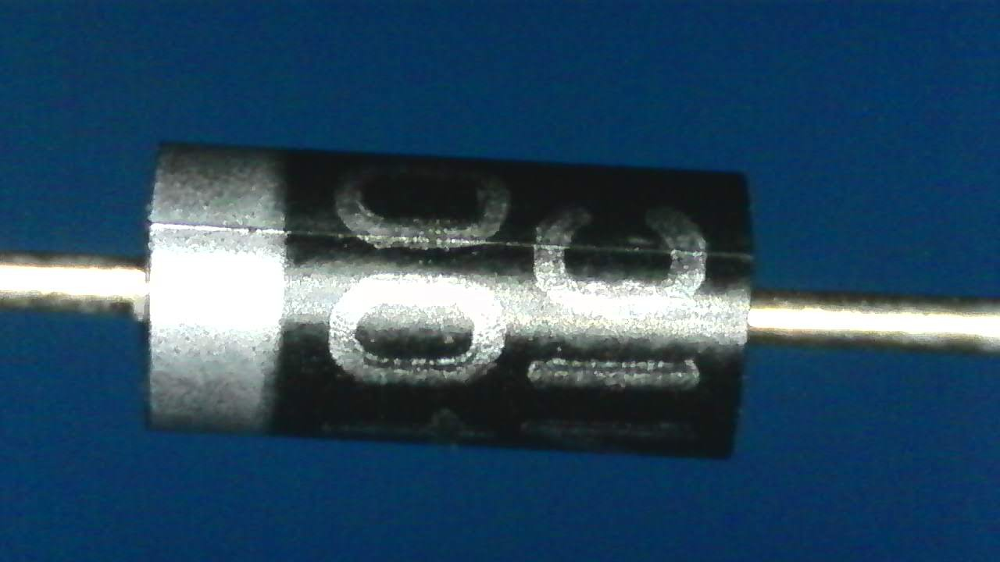
ภาพถ่ายจริง: ไดโอด 1N4007 ตามแหล่งภาพ แถบบนตัวอย่างใช้ชี้ด้าน cathode ไม่ใช่ TVSWikimedia Commons / CC0 A K / cathode สัญลักษณ์เพื่อเรียนหน้าที่ ไม่ใช่ผังขาหรือวงจรของ ECU เฉพาะรุ่น
ทำหน้าที่อะไร ไดโอดใช้กำหนดทิศทางกระแส เรียงกระแส หรือช่วยคลายพลังงาน ส่วน TVS ใช้จำกัดแรงดันกระชากตามพิกัดของมัน
อ่านอะไรบนตัว สัญลักษณ์ A = anode, K = cathode แถบบนไดโอดตัวอย่างสัมพันธ์กับด้าน K แต่ต้องตรวจชนิด/marking ไม่กำหนด breakdown จากสีหรือแพ็กเกจ
เริ่มวัดอย่างไร ใช้ diode mode บนวงจรไม่มีไฟ บันทึกทั้งสองทิศและสภาวะคาบอร์ด/แยกขา ค่า forward ขึ้นกับชนิด กระแสทดสอบ และอุณหภูมิ
อย่าสรุปเกินผลวัด ไม่มีเลข drop เดียวตัดสินทุก D; TVS แบบสองทิศอาจขึ้น OL ทั้งคู่บน DMM ปกติ ผลนี้ไม่ยืนยันว่าเสียหรือว่ายัง clamp ได้ตามพิกัด ห้ามแทน TVS ด้วยไดโอดทั่วไปจากรูปร่าง
ลองตอบ: ถ้า TVS สองทิศขึ้น OL ทั้งสองทิศ ต้องเปลี่ยนทันทีหรือยังขาดอะไร?
หลักการ: Fluke How to Test Diodes • datasheet ตรงชนิด
คอร์ส ECU • บทเรียน
LED ไดโอดเปล่งแสง 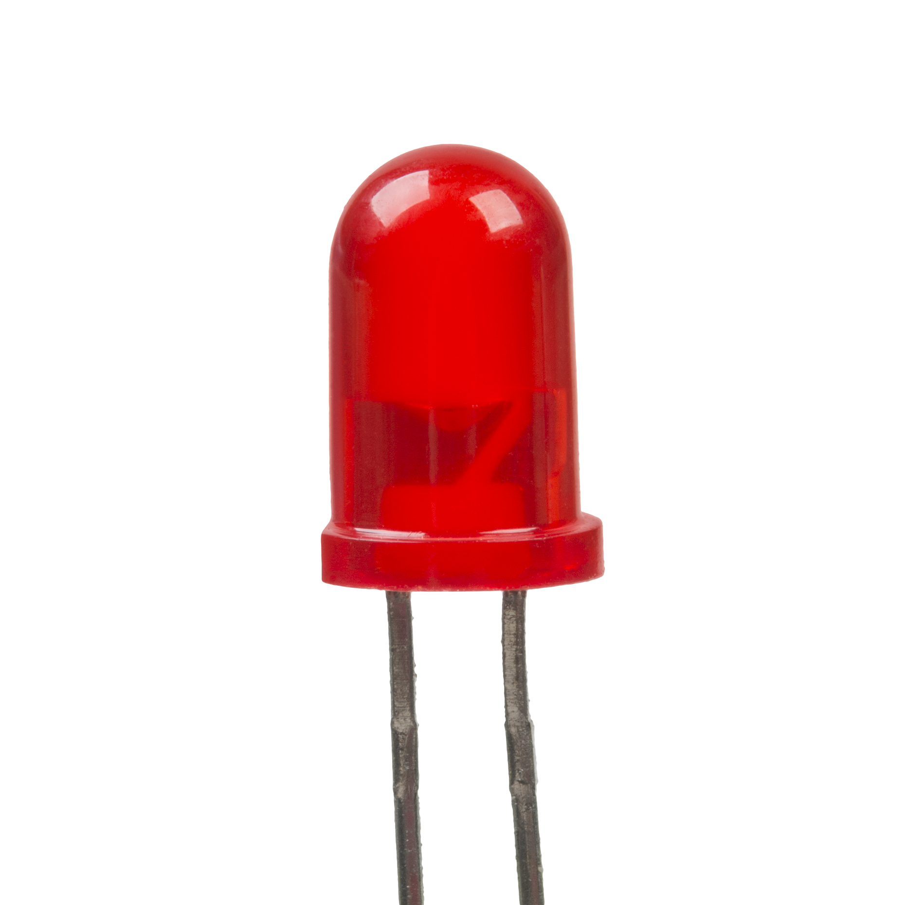
ภาพถ่ายจริง: LED สีแดงตัวอย่าง ใช้สอนรูปร่าง ไม่ใช่หลักฐานว่ามีอยู่ในทุก ECUWikimedia Commons / Public domainA K / cathode LED: ลูกศรแสงออก สัญลักษณ์เพื่อเรียนหน้าที่ ไม่ใช่ผังขาหรือวงจรของ ECU เฉพาะรุ่น
ทำหน้าที่อะไร เปล่งแสงเมื่อไบอัสตามเงื่อนไข ใช้เป็นไฟแสดงสถานะในวงจรฝึก/เครื่องมือ ไม่ใช่โหลดที่ต่อกับแหล่งจ่ายโดยไม่จำกัดกระแส
อ่านอะไรบนตัว สัญลักษณ์ LED มีลูกศรแสงออก เครื่องหมายขาจริงต้องตรวจชนิดและ datasheet โดยเฉพาะขาที่ถูกตัดแล้ว ไม่ตัดสินจากความยาวอย่างเดียว
เริ่มวัดอย่างไร diode mode อาจทำให้ LED บางรุ่นติดจาง หากพิกัดมิเตอร์เพียงพอ อ่านคู่มือก่อน ผลไม่ติดไม่ได้พิสูจน์ว่าเสียทุกชนิด
อย่าสรุปเกินผลวัด แรงดัน forward ขึ้นกับสี วัสดุ และกระแสทดสอบ LED ไม่ใช่ TVS และไม่ควรถูกใช้แทนไดโอดในภาคขับตามความคล้าย
ลองตอบ: ทำไม LED จึงต้องมีการควบคุมหรือจำกัดกระแส?
หลักการ: Fluke Diode Test • ข้อมูลรุ่น LED
คอร์ส ECU • บทเรียน
Q ทรานซิสเตอร์ BJT ภาพถ่ายจริง: BC547 ตัวอย่าง BJT รูปร่าง TO-92; ภาพ MOSFET ไม่ใช่ BJTWikimedia Commons / CC BY-SA 4.0 B C E NPN สัญลักษณ์เพื่อเรียนหน้าที่ ไม่ใช่ผังขาหรือวงจรของ ECU เฉพาะรุ่น
ทำหน้าที่อะไร สวิตช์หรือขยายสัญญาณ มีขาหน้าที่ B = base, C = collector, E = emitter ตัวอย่างสัญลักษณ์ในหน้านี้เป็น NPN
อ่านอะไรบนตัว อ่านเบอร์เต็ม ผู้ผลิต และด้านมองแพ็กเกจ ลำดับขา E/B/C ไม่เหมือนกันทุกรุ่น และชิ้น 3 ขาอาจเป็นอุปกรณ์ชนิดอื่น
เริ่มวัดอย่างไร เมื่อไม่มีไฟและรู้ pinout แล้ว ตรวจรอยต่อตามชนิดและตรวจความผิดปกติระหว่างขา บันทึกผลทั้งทิศทาง วงจรขนานหรืออุปกรณ์ป้องกันในตัวอาจเปลี่ยนผล
อย่าสรุปเกินผลวัด DMM ไม่รับรอง gain ทุกสภาวะ การรั่วเมื่อร้อน หรือการขับโหลดจริง อย่าเลือกอะไหล่จากจำนวนขา/ทรงเดียวกัน
ลองตอบ: แพ็กเกจ TO-92 บอกว่าเป็น BJT และขาซ้ายคือ E เสมอหรือไม่?
หลักการ: หลักทรานซิสเตอร์ • datasheet ของผู้ผลิตตรงเบอร์
คอร์ส ECU • บทเรียน
Q MOSFET และขา G D S 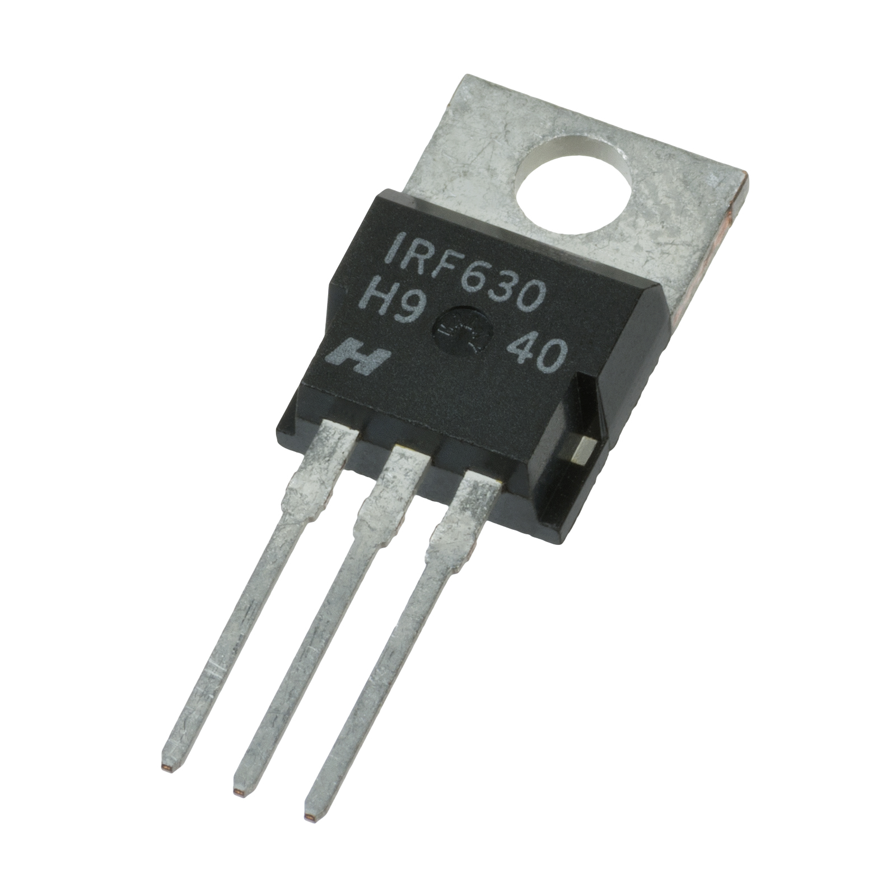
ภาพถ่ายจริง: IRF630 ตัวอย่าง MOSFET แบบ TO-220 ไม่ใช่คำแนะนำแทนอะไหล่ ECUWikimedia Commons / Public domainG D S MOSFET ขาหน้าที่แบบย่อ ไม่ใช่ลำดับขาจริง สัญลักษณ์เพื่อเรียนหน้าที่ ไม่ใช่ผังขาหรือวงจรของ ECU เฉพาะรุ่น
ทำหน้าที่อะไร ใช้ V_GS ควบคุมการนำระหว่าง drain/source; G = gate, D = drain, S = source ภาคขับจริงต้องทราบชนิดและ topology
อ่านอะไรบนตัว ตรวจเบอร์และ datasheet ก่อน บางแพ็กเกจมีแท็บเชื่อมกับขาทางไฟฟ้า จึงไม่ถือเป็นกราวด์โดยอัตโนมัติ V_GS(th) ไม่ใช่ค่าที่รับรองเปิดนำเต็มโหลด
เริ่มวัดอย่างไร เมื่อรู้ชนิด/ขาแล้ว ตรวจรอยต่อ body diode และความผิดปกติตาม datasheet ในสภาพไม่มีไฟ อุปกรณ์ที่มีวงจรในตัวหรือทางขนานอาจให้ผลต่างจากแบบพื้นฐาน
อย่าสรุปเกินผลวัด DMM ไม่ยืนยัน R_DS(on) ที่เงื่อนไขโหลดจริง การรั่วเมื่อร้อน หรือสวิตช์ได้ถูกต้อง ต้องดูค่าขับ gate, gate charge และเงื่อนไขพิกัดของรุ่น ไม่ใช้แรงดัน gate เดียวกับทุกตัว
ลองตอบ: V_GS ต้องวัดจาก gate เทียบ source หรือเทียบตัวถังเสมอ?
หลักการ: ROHM MOSFET Basics • Vishay IRF630 datasheet
คอร์ส ECU • บทเรียน
IC หน้าตาเหมือนกัน หน้าที่ต่างกัน ภาพจริงบนบอร์ด: แพ็กเกจขาสี่ด้านจากกล่อง 01 ยังไม่ยืนยันหน้าที่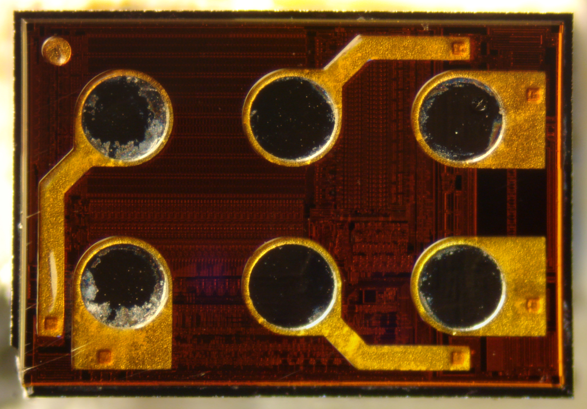
ภาพถ่ายจริง: ภาพ die ภายใน IC คนละชิ้นกับภาพบอร์ด ไม่ใช่ภาพแพ็กเกจหรือจุดวัดWikimedia Commons / CC0 ชนิดหน้าที่ ทำอะไร ข้อห้ามเดา Regulator / power IC สร้างและควบคุมไฟเลี้ยง ไม่ใช้ 5 V เป็นคำตอบของทุกขา Driver / interface ขับโหลดหรือแปลงสัญญาณสื่อสาร ตำแหน่งใกล้ปลั๊กยังไม่ยืนยันหน้าที่ MCU / processor ประมวลผลและควบคุม IC ใหญ่ไม่ได้เป็น MCU ทุกตัว Memory เก็บโปรแกรมหรือข้อมูล อาจอยู่ใน MCU 8 ขาไม่ได้เป็น EEPROM ทุกตัว
อ่าน marking เต็ม โลโก้ แพ็กเกจ revision และเอกสารตรงรุ่นก่อนกำหนด VCC/GND/EN หรือขาสัญญาณ เครื่องหมายขา 1 ต้องเทียบด้านมองให้ถูก ห้ามจิ้ม die หรือลวดเชื่อมเพื่อหาไฟ
กิจกรรม: เขียนข้อมูลที่ต้องมีเพิ่มก่อนยืนยันว่า IC หนึ่งตัวเป็น EEPROM
คอร์ส ECU • บทเรียน
X Y คริสตัลและเรโซเนเตอร์ 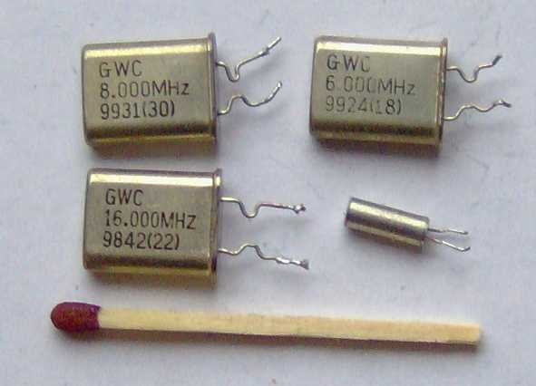
ภาพถ่ายจริง: ตัวอย่างคริสตัลหลายรูปแบบ ภาพต้นฉบับความละเอียดจำกัดจึงใช้ขนาดเล็กWikimedia Commons / CC BY-SA 3.0 X / Y • Hz สัญลักษณ์เพื่อเรียนหน้าที่ ไม่ใช่ผังขาหรือวงจรของ ECU เฉพาะรุ่น
ทำหน้าที่อะไร ช่วยกำหนดสัญญาณนาฬิกา หน่วย Hz / MHz คริสตัล resonator กับ oscillator ที่มีวงจรและไฟเลี้ยงในตัวเป็นคนละชนิด
อ่านอะไรบนตัว อ่านเบอร์และความถี่เมื่อชัด พร้อมดูชนิด จำนวนขาและโหลดที่ต้องการ ไม่เดาความถี่จากทรงกระป๋อง
เริ่มวัดอย่างไร DMM ไม่ยืนยันความถี่หรือการเริ่มสั่น งาน scope ต้องเลือกโพรบและจุดวัดที่ไม่โหลดวงจรมากเกินไปตามข้อมูลวงจร
อย่าสรุปเกินผลวัด โพรบที่ capacitance สูงอาจเปลี่ยนพฤติกรรมจนหยุดสั่น ห้ามเลือกจุดจิ้มสุ่มขา MCU หรือจ่ายไฟเข้าตัวถัง
ลองตอบ: การไม่มีรูปคลื่นหลังวางโพรบ อาจเกิดจากเครื่องมือได้อย่างไร?
หลักการ: Tektronix ABCs of Probes • datasheet ตรงอุปกรณ์
คอร์ส ECU • บทเรียน
CN J ปลั๊ก ลายทองแดง และ via ภาพจริงบนบอร์ด: หน้าปลั๊กกล่อง 05 มีคราบ แต่ยังไม่ตัดสินสภาพไฟฟ้าจากภาพภาพจริงบนบอร์ด: จุดบัดกรีปลั๊กด้านหลัง ภาพหมุนคนละทิศกับด้านหน้า
สิ่งที่ต้องรู้ก่อนตามขา ด้านมองหน้าขั้วต่อกับด้านบัดกรีอาจกลับทิศ ต้องใช้ร่องล็อก มุมตัวเรือน และเลขช่องที่ชัดเจนก่อนกำหนดขา เริ่มจากชื่อขาตามเอกสาร แล้วตาม copper/via ทีละช่วง
ตรวจอะไรได้ ตรวจขางอ บัดกรีร้าว และความต่อเนื่องเมื่อปลอดพลังงานตามขั้นตอน แต่เสียงบี๊บอาจผ่านทางขนาน/อุปกรณ์ ไม่ใช่หลักฐานว่าเป็นเส้นทองแดงเดียว ความต้านทานหน้าสัมผัสภายใต้โหลดต้องใช้วิธีและเครื่องมือที่ตรงงาน
คราบ/เงาสะท้อนไม่พิสูจน์น้ำเข้า ไหม้ หรือช็อต ไม่ขูดสารเคลือบหรือเปลี่ยนสภาพก่อนเก็บภาพ และห้ามจ่ายไฟตามสีสายที่คนก่อนต่อเพิ่ม
ให้ผู้เรียนระบุว่าในภาพมีข้อมูลพอจะนับเลขขาหรือยัง และต้องยืนยันอะไร
คอร์ส ECU • บทเรียน
F ฟิวส์ กับ R0 และ FB 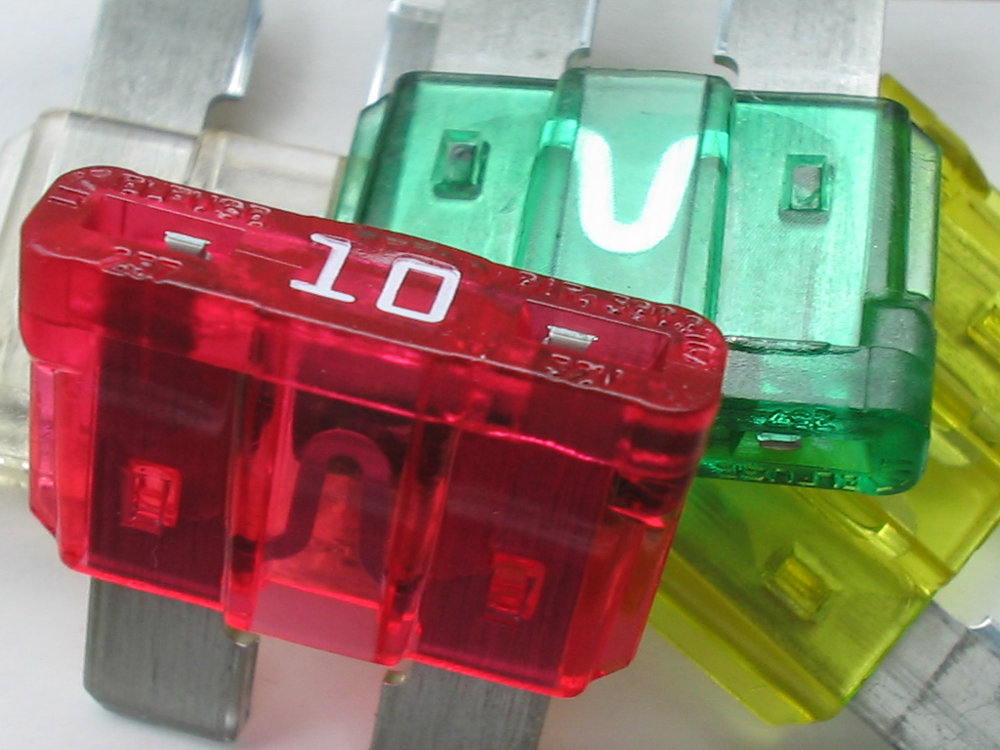
ภาพถ่ายจริง: ตัวอย่างฟิวส์รถยนต์ภายนอก ไม่ใช่หลักฐานตำแหน่งฟิวส์บน ECUWikimedia Commons / CC BY-SA 3.0 F F ≠ R0 ≠ FB สัญลักษณ์เพื่อเรียนหน้าที่ ไม่ใช่ผังขาหรือวงจรของ ECU เฉพาะรุ่น
ทำหน้าที่อะไร ฟิวส์ทำหน้าที่ป้องกันกระแสตามเงื่อนไขของมัน ส่วน R0 ใช้เชื่อมวงจรและ FB ลดรบกวนตามความถี่ แม้วัด DC ต่ำเหมือนกันก็ทำหน้าที่ต่าง
อ่านอะไรบนตัว อ่านชนิด เบอร์ กระแสพิกัดและข้อกำหนดการตัดของฟิวส์จากผู้ผลิต ไม่เลือกจากสีหรือขนาดอย่างเดียว โดยเฉพาะเมื่อไม่ทราบระบบสีของชนิดนั้น
เริ่มวัดอย่างไร ตัดไฟและแยกตามขั้นตอนก่อนตรวจ continuity ผลขาดต้องตรวจสาเหตุกระแสเกิน ไม่ใส่ฟิวส์พิกัดสูงขึ้นหรือบายพาสเพื่อให้ทำงาน
อย่าสรุปเกินผลวัด ไม่แทนฟิวส์ด้วย R0/ลวด และไม่แทน FB ด้วย R0 เพียงเพราะบี๊บ วัดต่ำไม่ได้แปลว่าเป็นฟิวส์หรือช็อต
ลองตอบ: ชิ้นสองขาที่บี๊บมีความเป็นไปได้อะไรบ้างนอกจากช็อต?
หลักการ: datasheet ของชิ้นที่เลือก • หลัก continuity
คอร์ส ECU • บทเรียน
GND และจุดอ้างอิงของการวัด ภาพจริงบนบอร์ด: ลายและรูยึดในภาพ ไม่ได้ยืนยันว่าเป็น GNDGND ต้องพิสูจน์ reference กราวด์สัญญาณ กราวด์กำลัง และตัวถังไม่จำเป็นต้องแทนกันได้ทุกจุด
วัดแรงดันต้องบอกทั้งจุดแดงและจุดดำ แรงดันเป็นความต่างระหว่างสองจุด เปลี่ยน reference อาจได้เลขต่าง แม้สายแดงอยู่ที่เดิม ต้องยืนยันเน็ตของขาที่ต้องวัดก่อน ตัวถัง รูยึด แท็บกำลัง และขั้วลบ C ไม่เป็นกราวด์อ้างอิงทุกกรณี
โหมด Ω กับแรงดันตกขณะโหลด continuity ในสภาพไม่มีไฟไม่บอกความสามารถรับกระแสของจุดต่อ การวัดแรงดันตกภายใต้โหลดเป็นงานอีกขั้น ต้องมี pinout โหลดและวิธีที่อนุมัติ ไม่ใช้เอกสารพื้นฐานนี้ต่อไฟให้กล่องไม่ทราบรุ่น
กราวด์โพรบสโคปบางระบบผูกกับ earth ห้ามหนีบลงจุดสวิตชิ่งหรือยกกราวด์เครื่องเพื่อแก้ปัญหา ต้องเลือก probe/reference/rating ให้เหมาะสม
หลักการ: Tektronix ABCs of Probes
คอร์ส ECU • บทเรียน
อ่าน datasheet และแพ็กเกจก่อนเลือกอะไหล่ ภาพถ่ายจริง: แพ็กเกจเล็กสามขา ไม่ใช่คำยืนยันลำดับขาของทุกตัวWikimedia Commons / CC BY-SA 4.0 ภาพถ่ายจริง: แพ็กเกจมีแท็บโลหะ ไม่ถือว่าแท็บคือกราวด์Wikimedia Commons / Public domainต้องตรวจ เหตุผล เบอร์เต็มและผู้ผลิต เบอร์คล้ายกันหรือ suffix ต่างอาจมี pinout/พิกัดต่าง แพ็กเกจและด้านมอง แยก top view/bottom view และตำแหน่งขา 1 พิกัดกับเงื่อนไข absolute maximum ไม่ใช่จุดทำงานที่แนะนำ ความร้อน พัลส์ และโหลด เลขกระแสตัวใหญ่ไม่รับรองใช้แทนในวงจร ECU ได้ คุณสมบัติสำคัญ R: tolerance/pulse; C: ESR/ripple; L: saturation; Q: drive/charge แหล่งเอกสาร ตรวจจากผู้ผลิตและ revision ไม่ใช้ภาพร้านเพียงอย่างเดียว
ถ้าอะไหล่ใหม่เสียบลงรูเดิมได้ ยังต้องตรวจอะไรอีกอย่างน้อย 3 ข้อ?
คอร์ส ECU • บทเรียน
เลือกโหมดวัดให้ตรงคำถาม คำถาม เครื่องมือ/โหมดที่เริ่มใช้ ยังพิสูจน์อะไรไม่ได้ R ขาดหรือค่าเปลี่ยน? Ω เมื่อปลอดพลังงาน พิกัดพัลส์หรือสภาพร้อนทั้งหมด C มีค่าประมาณเท่าไร? Capacitance/LCR ตามเงื่อนไข ESR/leakage/สภาพโหลดทั้งหมด L ขาดหรือไม่? Ω / LCR ตามคำถาม บี๊บไม่บอกช็อตรอบหรือ saturation D นำสองทิศผิดปกติหรือไม่? Diode mode ทั้งสองทิศ breakdown/clamp ที่พิกัดจริง Q มีรอยต่อผิดปกติ? Diode/Ω ตาม datasheet การขับโหลดจริงหรือการรั่วเมื่อร้อน มี DC ที่จุดนี้หรือไม่? V และ reference ที่ยืนยัน ค่าเฉลี่ยไม่แทน ripple/transient สัญญาณนาฬิกาทำงานหรือไม่? scope/probe ตามวงจร DMM ไม่ยืนยันความถี่/การเริ่มสั่น
ลำดับก่อนแตะมิเตอร์ รู้ว่าถามอะไรและอ่านเอกสารของเครื่องมือ แยกพลังงานและจัดการประจุตกค้างตามโมดูล ตรวจว่าไม่มีแรงดันค้างก่อนเลือก Ω / diode / C เลือกขาและเน็ตที่ยืนยันแล้ว บันทึกผลกับหน่วย ตรวจทางขนานและข้อจำกัดก่อนสรุปชิ้นส่วนเสีย กล่อง 06 มีป้ายแรงดันสูง กล่อง 07 มีลวดเชื่อมละเอียด ไม่ใช้ฝึกจิ้มบนแผงที่ไม่ทราบเน็ต ใช้บอร์ดฝึกที่ปลอดพลังงานและผู้สอนอนุมัติจุดตรวจเท่านั้น
คอร์ส ECU • วงจรสอน
เชื่อม R และ C เป็นวงจรอ่านง่าย 
วงจรสอนจากโครงการนี้ ตัวเลขสมมติ ไม่ใช่ค่าจุดวัดบนกล่องจริง แหล่งภาพแยกจากภาพถ่ายอุปกรณ์
คอร์ส ECU • ใบงาน
แบบฝึก 1 แยกสิ่งที่เห็นจากสิ่งที่เดา ภาพจริงบนบอร์ด: ภาพ A: marking บนอุปกรณ์และรหัสตำแหน่งมีหน้าที่ต่างกันภาพจริงบนบอร์ด: ภาพ B: อุปกรณ์หลายชนิดรวมกัน ยังไม่ทราบหน้าที่ทุกตัว
ทำงานเป็นคู่ อ่านภาพก่อนหยิบมิเตอร์ และแยกคำตอบเป็น “เห็นจริง / สันนิษฐาน / ยังไม่ทราบ”
โจทย์ บันทึกคำตอบ 1. สิ่งใดในภาพเป็นรหัสบนตัว และสิ่งใดเป็นเลขตำแหน่ง? ____________________________ 2. ระบุชนิดที่พอบอกได้จากรูปลักษณ์ พร้อมข้อจำกัด ____________________________ 3. ข้อมูลใดต้องอ่านเพิ่มก่อนกำหนดค่า/ขา? ____________________________ 4. เลือกโหมดเครื่องมือหนึ่งอย่าง และบอกสิ่งที่มันไม่ยืนยัน ____________________________ 5. เหตุใดจึงยังไม่เขียน 5 V ลงทุกจุด? ____________________________
คำตอบ “ยังไม่ทราบ” พร้อมเหตุผลมีคุณค่า ห้ามเติมชื่อ MCU/driver/EEPROM หรือค่า L/C จากรูปร่างให้ครบช่องโดยไม่มีหลักฐาน
คอร์ส ECU • ใบงาน
แบบฝึก 2 ใบบันทึกการวัดบนบอร์ดฝึก ใช้เฉพาะอุปกรณ์หรือบอร์ดฝึกที่ผู้สอนอนุมัติและจัดการพลังงานแล้ว ไม่ใช้เป็นใบสั่งจ่ายไฟให้ ECU ที่ยังไม่ทราบขา
ก่อนวัด บันทึก ชื่อผู้เรียน / วันที่ / ชิ้นงาน ____________________________ เบอร์ชิ้น / reference / แพ็กเกจ ____________________________ ภาพจุดตรวจและด้านมอง ____________________________ คู่มือ/เกณฑ์และ revision ____________________________ แหล่งพลังงานถูกแยกและตรวจประจุตกค้างอย่างไร ____________________________ เครื่องมือ รุ่น โหมด และย่าน ____________________________
ครั้ง จุดแดง / จุดดำ หรือคู่ขา ผลพร้อมหน่วย คาบอร์ด/แยกขา และเงื่อนไข 1 ____________ ____________ ___________________ 2 ____________ ____________ ___________________ 3 ____________ ____________ ___________________ 4 ____________ ____________ ___________________
สรุปหลักฐาน หัวข้อ เขียนก่อนตัดสินใจ ผลพิสูจน์อะไรได้ ________________________________ สิ่งที่เครื่องมือยังพิสูจน์ไม่ได้ ________________________________ ทางขนาน/สภาพขั้วต่อ/ข้อสงสัย ________________________________ ยืนยันแล้ว / ต้องตรวจเพิ่ม / ส่งต่อ ________________________________
ผู้สอนตรวจความปลอดภัย วิธีเลือกเครื่องมือ และเหตุผลการสรุป ไม่ให้คะแนนจากการเดาชื่ออะไหล่เสียได้ตรงกันอย่างเดียว
คอร์ส ECU • ผู้สอน
แนวคำตอบและเกณฑ์ตรวจผู้เรียน คำถามจากบท แนวตอบ R 1 kΩ ±5% 950–1,050 Ω ตาม tolerance ของตัวอย่าง ยังต้องคิดความคลาดเคลื่อนเครื่องมือ 103 กับ R103 บนแผง 103 บน R ในระบบนั้นคือค่า 10 kΩ ส่วน R103 อาจเป็นเลขตำแหน่ง mΩ กับความต้านทานสาย สัดส่วนความคลาดเคลื่อนสูง ต้องชดเชย/ใช้วิธีเหมาะสม L บี๊บแปลว่าดีครบหรือไม่ ไม่ครบ ไม่พิสูจน์ช็อตรอบ/อิ่มตัว/การกรอง C 25 V ต้องวัดได้ 25 V? ไม่ใช่ เป็นพิกัดทนแรงดันของชิ้นตามข้อกำหนด TVS สองทิศ OL ทั้งสองทิศ ยังตัดสินไม่ได้ ต้องชนิดและวิธีที่เหมาะสม MOSFET วัด V_GS เทียบอะไร gate เทียบ source ที่ยืนยัน ไม่ใช่ตัวถังเสมอ เปลี่ยนอะไหล่ที่ทรงเดียวกันได้เลย? ไม่ได้ ต้องตรงหน้าที่ ขา พิกัด และเงื่อนไข
เกณฑ์ผ่านการฝึก อ่านหน่วยและรหัสได้ • แยกรหัสตำแหน่งกับค่าตัว • เลือกวิธีวัดมีเหตุผล • บอกข้อจำกัดของผล • ไม่ข้ามเงื่อนไขปลอดพลังงาน • สรุปตามหลักฐาน
หากทำผิดเรื่องขา/กราวด์/พลังงานตกค้าง ให้ทบทวนก่อนเริ่มวัด ไม่แก้ด้วยการสุ่มเปลี่ยนโหมดหรือเพิ่มไฟ
โจทย์ ตัวเลข และผลคำนวณในเอกสารเป็นตัวอย่างสอน ไม่ใช่ผลซ่อมรถจริงหรือเกณฑ์ที่รับรองใช้กับ ECU ทุกกล่อง
คอร์ส ECU • อ้างอิง
เอกสารอ้างอิงและขอบเขต ภาพจริงบน ECU ภาพบอร์ดมาจากผู้ใช้ในโครงการกล่อง 01–07 เก็บไฟล์เดิมไว้ใน originals ของโครงการแม่ การขยายภาพเป็นการแสดง viewport ในเอกสาร ไม่ได้สร้างชิ้นส่วนหรืออ่านรหัสที่มองไม่เห็นขึ้นใหม่
ยังไม่ใช่การรับรองฮาร์ดแวร์ เนื้อหานี้สอนอุปกรณ์และวิธีคิด ไม่ใช่ BOM/pinout/netlist หรือสเปกแรงดันของกล่องจริง ไม่อ้างการทดลองกับรถหรืออะไหล่ที่ยังไม่ได้ทดสอบ
ทีมเอเจนต์ตรวจความถูกต้องและรูปเล่มตามขอบเขตรายงาน ไม่ใช่การรับรองจากผู้ผลิตหรือผู้เชี่ยวชาญมนุษย์
คอร์ส ECU • เครดิตภาพ
เครดิตภาพถ่ายจริง 1 ภาพภายนอกแต่ละรูปใช้สิทธิ์ตามแหล่งต้นฉบับที่กำกับ เครดิตใต้ภาพทุกจุดยังอยู่ แสดงภาพเต็มและปรับขนาดในหน้าเอกสาร ไม่แก้ไฟล์ภาพต้นฉบับ สิทธิ์ภาพแยกตามแต่ละรายการ ไม่อ้างว่ารูปจากผู้ถ่ายทุกคนเป็นของผู้จัดทำ
รูปชิ้นเดี่ยวบางภาพเป็นอุปกรณ์อิเล็กทรอนิกส์ทั่วไป ใช้เทียบรูปร่าง/สัญลักษณ์ ไม่ใช่ข้อแนะนำใช้ชิ้นนั้นแทนชิ้นส่วนบนรถ
ทะเบียนภาพ photo_manifest.json เก็บผู้สร้าง ลิงก์ ใบอนุญาตและ SHA256 เพื่อให้ตรวจกลับได้ รูปชิป D23 เป็นภาพภายใน IC ไม่ใช่ภาพแพ็กเกจ และไม่ใช่ชิปชิ้นเดียวกับบอร์ดผู้ใช้
คอร์ส ECU • เครดิตภาพ
เครดิตภาพถ่ายจริง 2 ภาพภายนอกแต่ละรูปใช้สิทธิ์ตามแหล่งต้นฉบับที่กำกับ เครดิตใต้ภาพทุกจุดยังอยู่ แสดงภาพเต็มและปรับขนาดในหน้าเอกสาร ไม่แก้ไฟล์ภาพต้นฉบับ สิทธิ์ภาพแยกตามแต่ละรายการ ไม่อ้างว่ารูปจากผู้ถ่ายทุกคนเป็นของผู้จัดทำ
รูปชิ้นเดี่ยวบางภาพเป็นอุปกรณ์อิเล็กทรอนิกส์ทั่วไป ใช้เทียบรูปร่าง/สัญลักษณ์ ไม่ใช่ข้อแนะนำใช้ชิ้นนั้นแทนชิ้นส่วนบนรถ
ทะเบียนภาพ photo_manifest.json เก็บผู้สร้าง ลิงก์ ใบอนุญาตและ SHA256 เพื่อให้ตรวจกลับได้ รูปชิป D23 เป็นภาพภายใน IC ไม่ใช่ภาพแพ็กเกจ และไม่ใช่ชิปชิ้นเดียวกับบอร์ดผู้ใช้